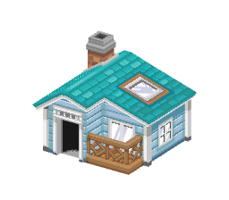
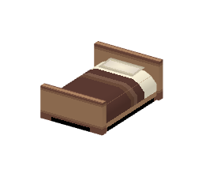

VERSION 0.9.0


3D & sprites 2D Import vérifié
Noir & Blanc 2
Unys, pièce par pièce. Des modèles 3D, du mobilier et des pinceaux pour composer vos extérieurs comme vos intérieurs.
8 818 ressources3 981 motifs
Explorer la bibliothèque